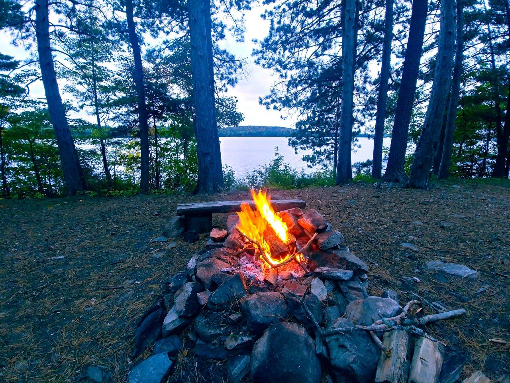
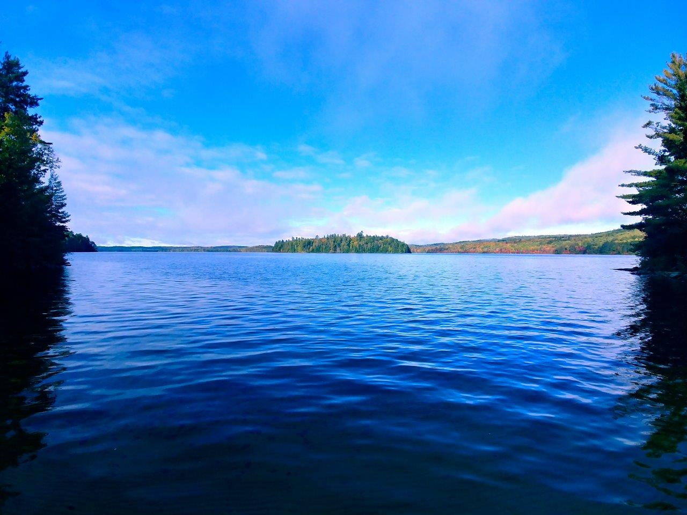

|
2021 Sept 30-Oct 1 - Cedar Lake (Brent) from Access Point 27
Day 1: South Shore of Cedar (Marshy Bay - Petawawa River)
Day 2: North + East Shore of Cedar (Petawawa River to Brent).
Campsite circled in red, lunch and tea sites circled in green.
Note: North-west portion of lake (North of Brent) not explored on this trip.
~32km paddled. |
 |
Starting out at Brent for my 2nd ever solo trip. Could only get away for one night, but I had a lot of paddling planned. First time I'd been stopped by a ranger to check for my permit, but he gave me some advice on what island sites were good (and what ones were closed). Overcast day to start and it stayed that way. |
 |
Paddled west from the access point to cross Cedar at the narrowest point aroud, then followed the south shore until I could cross to my island campsite with the minimum amount of open water. Had lunch at the site (which was very large and open, great for a group), then headed directly across the lake to the Petawawa river outlet and followed the south shore again until I got to the same spot in the lake that I had crossed before to get to my site. |
 |
Morning on Day 3, view from the far east bay of Cedar looking at Acanthus Island. The colours were very nice this morning with the blue sky. |
 |
View down the North Shore of Cedar (near Acanthus Island). The best colours I'd found yet on Cedar, slightly past peak but the red and oranges were still very bright. |
 |
Site on the north shore where I stopped for a tea, a few of the sites have a decent beach with big open views. |
 |
Just admiring the canoe and the nice red colours of fall. |
 |
On the way out from Brent, stopped at the Brent Crater lookout tower for a view, could very clearly see the depression of the crater, may explore those lakes one day. |